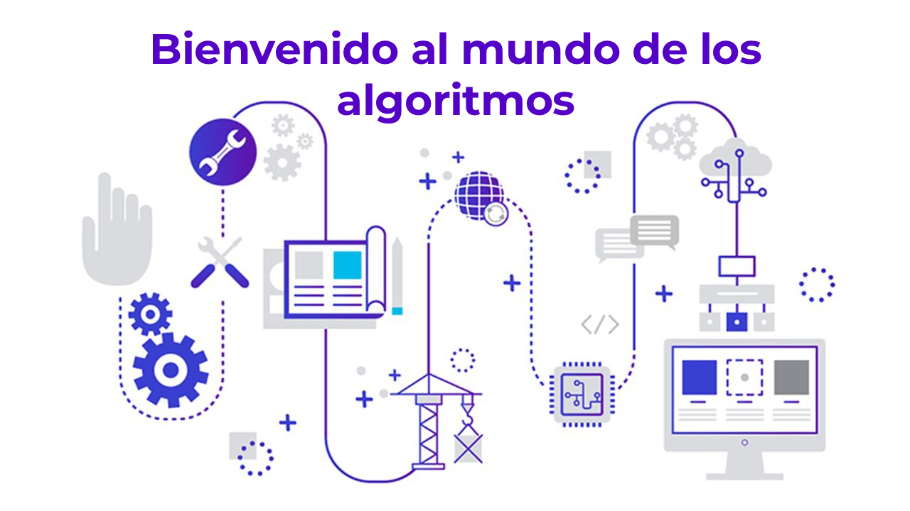

 ¿Qué es un Algoritmo?
Un algoritmo es una secuencia lógica y finita de pasos que permite solucionar un problema o cumplir con un objetivo. Los algoritmos deben ser precisos e indicar el orden lógico de realización de cada uno de los pasos, debe ser definido y esto quiere decir que si se ejecuta un algoritmo varias veces se debe obtener siempre el mismo resultado, también debe ser finito o sea debe iniciar con una acción y terminar con un resultado o solución de un problema.
Cuando se elabora un algoritmo se debe tener en cuenta lo siguiente.
Tener claro cuál es el problema que va a solucionar. Establecer un objetivo que permita medir la solución del problema. Elaborar un algoritmo que solucione el problema. Realizar pruebas al algoritmo para verificar los resultados.

Ejemplo 1
Elabore un algoritmo que permita ir de la casa al colegio, Objetivo Ir de la casa al colegio.
Inicio
Salir de la casa
Si está lejos del colegio entonces tomar un medio de transporte que lo deje cerca del mismo.
Si no está lejos del colegio entonces dirigirse caminando hacia él mismo
Llegar a la puerta del colegio Fin
Ejemplo 2
Plantee un algoritmo que permita adquirir un boleto para ir a cine. Objetivo: Adquirir un boleto para ir a cine.
Inicio
Dirigirse hacia el teatro donde quiere ver la película
Si hay gente esperado el boleto entonces hacer la fila y avanzar con la misma hasta llegar a la taquilla
Si no hay gente esperando comprar el boleto entonces dirigirse a la taquilla
Comprar el boleto para ver la película.
Fin.
Existen dos tipos de algoritmos. Los algoritmos convencionales que son los que hacen las personas todos los días en sus diferentes actividades para solucionar problemas del trabajo o de la vida cotidiana. Y los algoritmos computacionales que son los que utilizan el computador a través de programas diseñados por desarrolladores de software y programadores para dar solución a problemas de cálculo o de manejo de información.
 ALGORITMOS CUALITATIVOS
ALGORITMOS CUALITATIVOS
Los algoritmos cualitativos permiten dar solucion a casos cotidianos en donde no es necesario utilizar operaciones matematicas para llegar a dicha solucion.
1. Buscar utensilios.
2. Lavar las papas.
3. Llenar la olla con agua.
4. Colocar las papas dentro de la olla.
5. Encender la estufa.
6. Colocar la olla en la estufa.
7. Esperar a que hiervan.
8. Retirar las papas.
9. Pelar las papas.
0. Triturar las papas.
1. Agregar queso, mantequilla y leche.
2. Mezclar.
3. Agregar sal al gusto.
4. Servir.
ALGORITMOS CUANTITATIVOS
A diferencia de los anteriores, solucionan casos en donde es necesario el recurrir a las matematicas para dar solucon a dichos casos.
Ejemplos de Algoritmos Cuantitativos:
a) Obtener la suma de 2 números.
1. Inicio
2. Declarar (a,b,c)
3. Ingresar (a,b)
4. c=a+b
5. Mostrar (c)
6. Fin
b) Obtener el área de un triángulo.
1. Inicio
2. Declarar (b,h,a)
3. Ingresar (b,h)
4. a=(b*h)/2
5. Mostrar (a)
6. Fin
c) Ingresar una edad. Obtener el año en que nació.
1. Inicio
2. Declarar (e,a)
3. Ingresar (e)
4. a=2012-e
5. Mostrar (a)
6. Fin